CrewBoard user manual
Crew rotation and dispatch: every screen, every concept, and how to work with it.
Screenshots show the demo data that ships with the platform. Your own data will look the same but with your names, bases and units.
1. Start here
CrewBoard answers one question every day: is every seat on every unit filled by the right person, and what do I do where it is not?
What it does
- Shows the day. Every unit (truck / rig) with its crew, every base, and everyone who is free.
- Plans. The planner proposes who works where for the coming weeks, following the crew rules; you review and publish.
- Covers gaps. When a seat is left empty, a replacement task opens with the best people ranked. Put one on the seat and the task turns green: fixed.
- Keeps the fleet in order. Unit status, jobs, the workshop, preventive maintenance, papers (registration, insurance, inspection).
- Shows where you will be short. A few key numbers and the coverage of the next 12 weeks, base by base.
Who uses it
CrewBoard has one user: the manager, who plans, dispatches and decides everything. There are no other accounts, no sign-in and no employee app: CrewBoard is installed on the manager's computer and opens straight on the board.
Opening CrewBoard
- Install it once with
CrewBoard Setup 1.0.0.exe. It adds CrewBoard to the Start menu and the desktop. - Open CrewBoard from the Start menu or the desktop. It opens in its own window, on the board.
- Close the window to stop it. Opening it again while it is open brings the window back.
2. Finding your way around
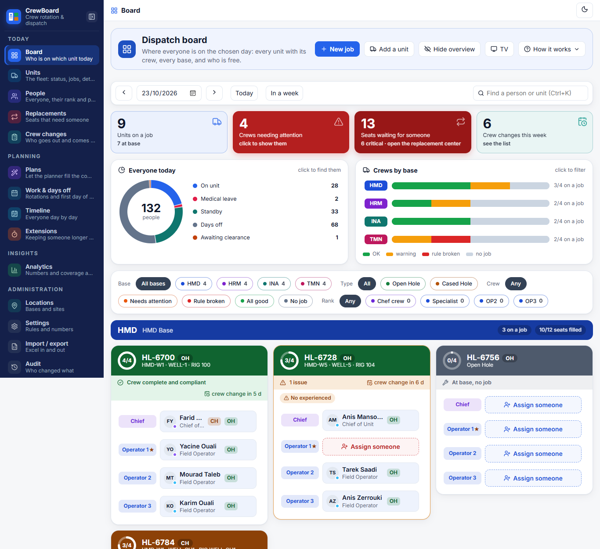
The sidebar
Screens are grouped by what you do with them. Each entry has a short description under its name.
| Group | Screens |
|---|---|
| Today | Board, Units, Replacements, Crew changes |
| Planning | Plans, Timeline, Extensions |
| Insights | Analytics |
| Administration | Settings, Import / export, Audit |
Use the small button at the top of the sidebar to collapse it to icons. On a phone the sidebar becomes a menu you open with the menu button.
The top bar
- Moon / sun: switch between light and dark appearance. CrewBoard remembers your choice; until you choose, it follows your computer.
Page guides
Every main screen starts with a short guide: one sentence on what the screen is for and numbered steps for how it works. It is open the first time you visit a screen and folded afterwards. Press How it works to open or fold it again.
Names and unit codes are links
Anywhere in CrewBoard, click a person's name to open their profile panel on the right (contact details, status, schedule, history), and click a unit code such as HL-6700 to open that unit's panel (job, crew, maintenance, history). Press Esc to close a panel or dialog.
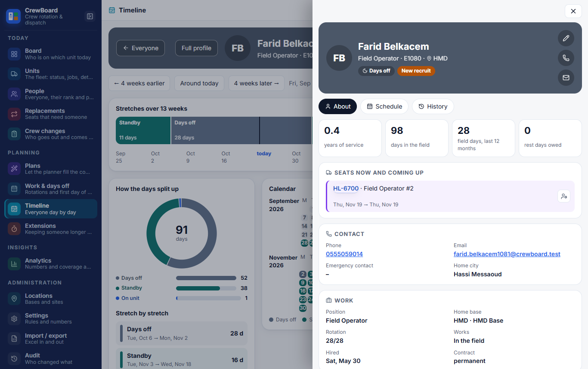
Searching
On the board, press Ctrl + K or click the search box to find a person or a unit by name or code.
Live updates
Screens refresh by themselves when something changes (a plan is published, a task is fixed). You do not need to reload.
3. A day with CrewBoard
A typical morning for the manager:
- Open the Board. Look at the red tiles first. They tell you how many crews need attention and how many seats are waiting for someone.
- Open Replacements if seats are waiting. Work from the most urgent task down: pick the best person and press Put on this seat. The task turns green and moves to "Fixed this week".
- Someone cannot work today? Click them on the board and press Unassign (or Replace to put someone else in straight away).
- Look at Crew changes for the coming days: green rows are settled, red rows have nobody coming yet.
- Glance at Units for services due and papers expiring, and for units in the workshop.
- Once a week or month open Plans to generate and publish the next stretch, and Analytics to see where you will be short of people.
The thing that needs action today is always the loudest thing on screen. Red solid tiles mean "act now"; everything else is quiet on purpose.
Board
Where everyone is on the chosen day: every unit with its crew, every base, and who is free.
The toolbar
- Date, arrows, Today, In a week: look at any other day. The board then shows who held each seat on that day.
- New job / Add a unit / Hide overview / TV / How it works: create a job, add a unit, collapse the map and charts, show the wall display, open the guide.
The summary tiles
| Tile | Meaning | Click to |
|---|---|---|
| Units on a job | How many units are working today | Show units in the field |
| Crews needing attention | Crews that break a rule or have an empty required seat. Turns solid red when above zero. | Filter to those crews |
| Seats waiting for someone | Open replacement tasks, with how many are critical | Open the Replacement center |
| Crew changes this week | Handovers in the next seven days | Open Crew changes |
Reading a unit card
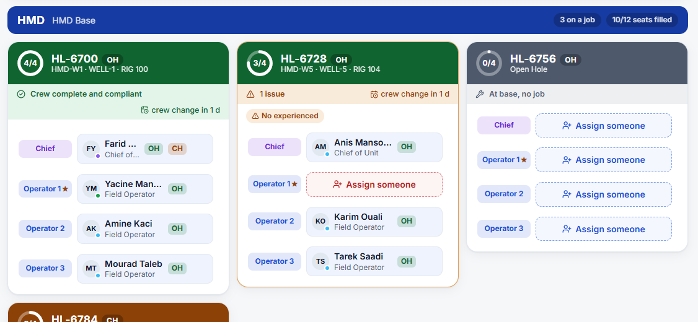
- Header colour: green = Open Hole (OH), amber = Cased Hole (CH), grey = at base without a job. The ring shows seats filled (for example 3/4).
- Status line: "Crew complete and compliant", or the number of issues, or "At base, no job", or "Under maintenance". Also the next crew change ("crew change in 14 d").
- Seats: Chief and Operator 1 to 3 (a field operator is also the driver). The star on Operator 1 marks the seat that needs an experienced person. Each person shows initials, name, position and a small dot for their state today.
- Red outline: the crew breaks a rule. Click the card header to read the issues in the unit panel.
- "Assign someone": an empty seat. A solid red-tinted one is an empty required seat.
Filling a seat
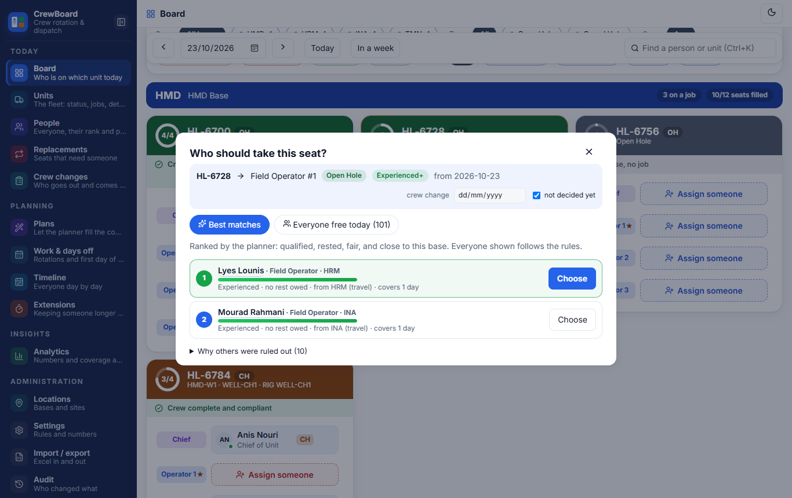
- Press Assign someone on an empty seat.
- Choose how long the person is needed (3, 7, 14 or 28 days).
- Best matches lists people the planner recommends: qualified, rested, fair and close to this base. Each line says why ("Experienced, no rest owed, same base, covers 7 days"). Everyone free today lists everybody available.
- Press Choose. CrewBoard checks every crew rule before it saves.
- "Why others were ruled out" explains who cannot take the seat and why.
You can also drag a person from the lanes at the bottom of the board (Standby, Days off) onto a seat.
If a choice would break a hard rule, CrewBoard stops you and asks for an override reason. The reason is stored in the audit log. Use overrides sparingly.
Replacing someone, or taking them off a seat
Click a person on a unit card (anywhere on their chip except the name, which opens their profile), or the small person-and-gear button that appears at the end of the row when you point at it.
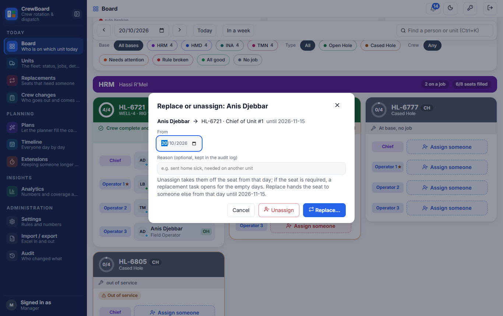
- From: the first day the change applies. It is today unless you pick another day, up to the end of the person's stretch on this seat.
- Reason (optional): written to the audit log with the change.
- Unassign takes the person off the seat from that day. If the seat is required, a replacement task opens for the empty days so the gap shows up in Replacements.
- Replace… opens the same ranked list as "Assign someone", for the rest of the stretch. Pick someone, check what would happen, and confirm. The person leaves the seat and the new one takes it the same day, in one step, so the seat is never left empty and no replacement task is opened.
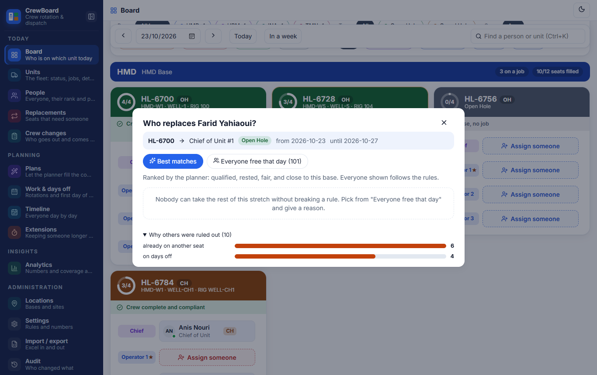
The same actions are available wherever a person sits on a seat: in the unit panel (Crew today), on the unit page (Crew today table) and in the person's profile panel under "Seats now and coming up", which you can open from any name in CrewBoard.
The unit panel
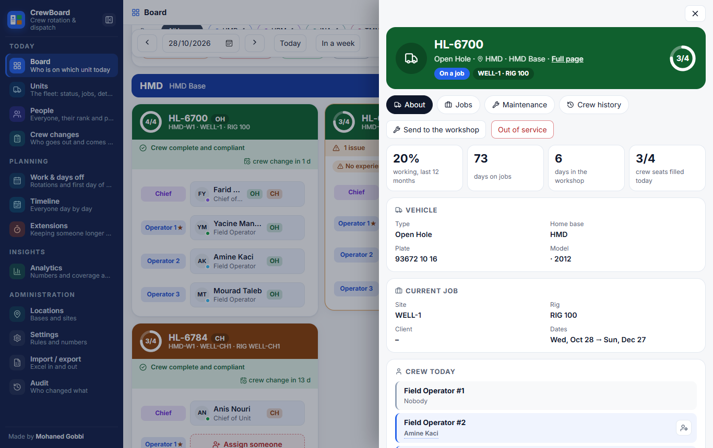
Filters and the overview
Click a base on the map, a slice of a chart or any coloured chip (base, Open Hole / Cased Hole, crew state) to filter the board. Press the chip again, or "All", to clear.
New job
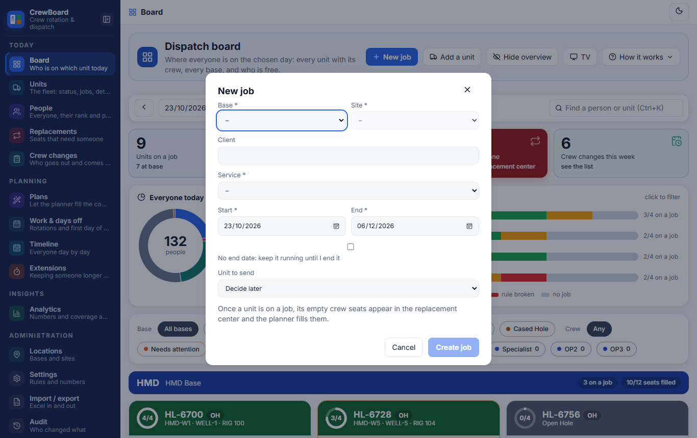
A job is a piece of work at a site (a well and rig) with start and end dates. If you deploy a unit with it, the unit's seats open for the job's dates and, if nobody covers them, replacement tasks appear.
TV mode
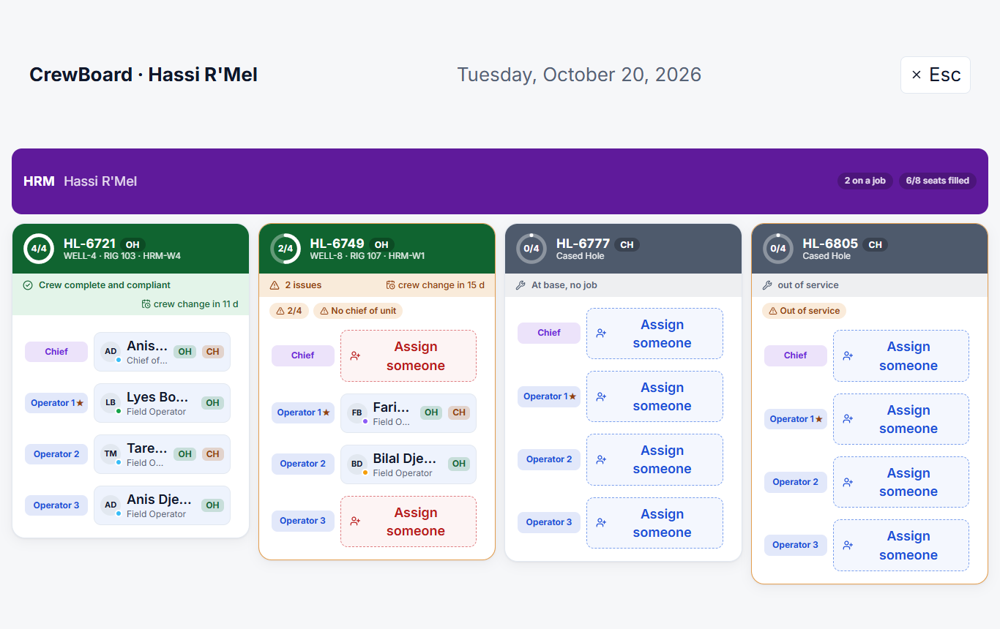
Time machine
Move the date back to see who held a seat on a past day. This is built from the assignment records; if something was recorded late (for example someone taken off a past stretch afterwards), the past view may not show exactly what was on screen that day.
Dark mode
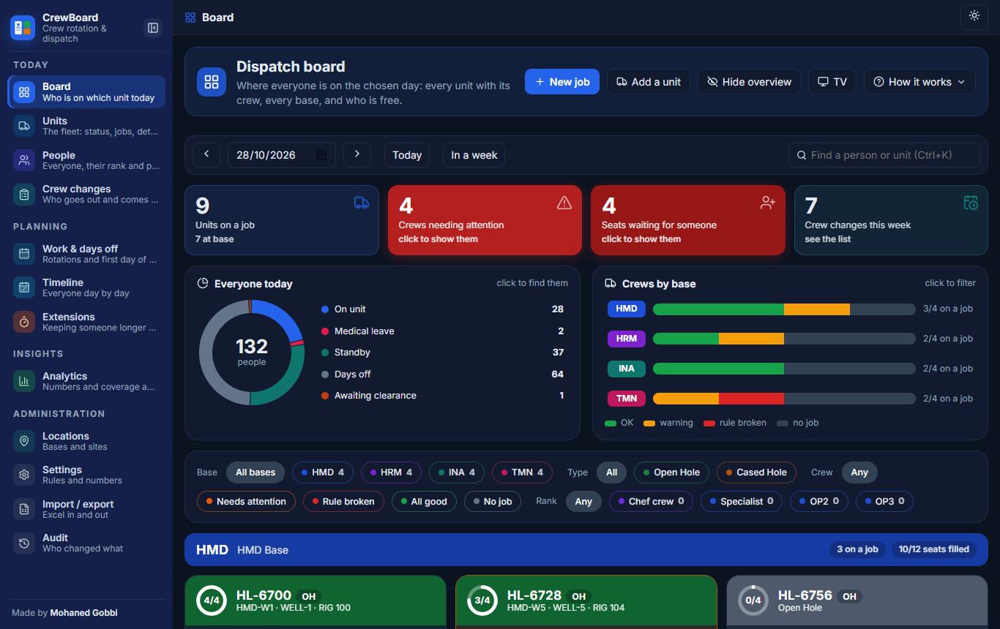
Units
The whole fleet: where each truck is based, what it is doing today, its crew and its details.
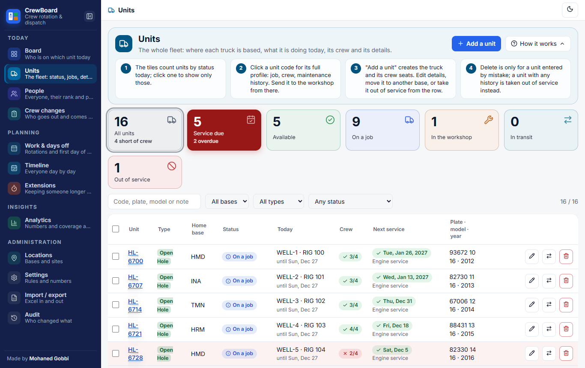
- Tiles count units by status today (All, Service due, Available, On a job, In the workshop, In transit, Out of service). Click one to show only those. The Service due tile turns solid red when a service is overdue.
- Search and filters: code, plate, model or note; base; type; status.
- The table shows type, home base, status, today's job, crew filled, next service, plate, model and year.
- Row buttons: edit details, move to another base, send to the workshop (or mark repaired), out of service / back in service, delete.
Add a unit
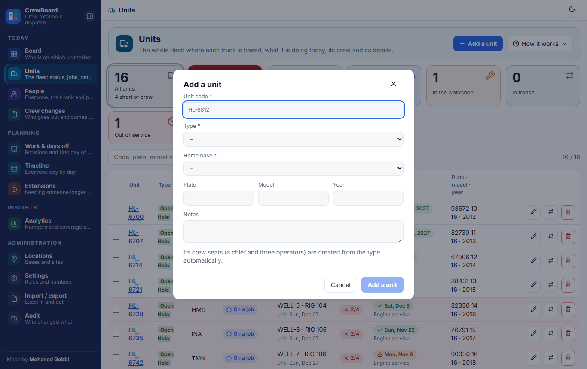
Status of a unit
| Status | Meaning |
|---|---|
| Available | At base, ready, no job |
| On a job | Deployed on a job today |
| In the workshop | Sent to the workshop with a return date; its crew seats are not needed |
| In transit | Moving to another base |
| Out of service | Retired or unusable; kept with its history |
Status is worked out from jobs and the workshop; you do not set "On a job" by hand. Create a job, or send the unit to the workshop, and the status follows.
Delete is only for a unit entered by mistake. A unit with any crew assignment, job or workshop visit cannot be deleted; CrewBoard offers Out of service instead.
The unit page
Click a unit code (or open the unit panel and follow its link) for the full unit page.
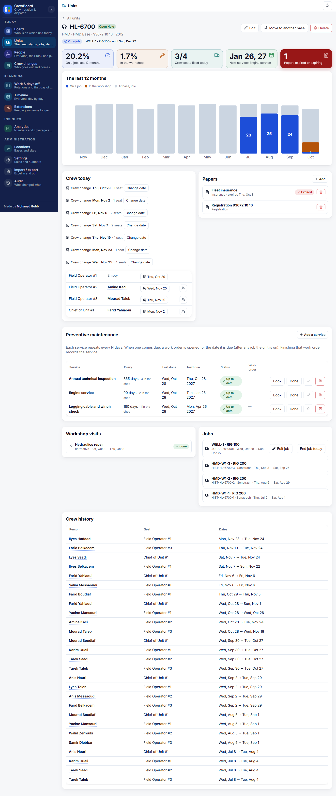
- Tiles: share of the last 12 months on a job and in the workshop, crew seats filled today, next service, papers expired or expiring.
- The last 12 months: a bar per month, split into on a job (blue), in the workshop (orange) and at base (grey).
- Crew today and Crew history: who holds each seat now and who held it before. The button next to each person replaces or unassigns them (see Board, "Replacing someone").
- Papers: registration, insurance, technical inspection. Add one with its expiry date and attach the file; expired or soon-to-expire papers turn red.
- Preventive maintenance: a plan per service ("every 90 days"). When a service falls due, CrewBoard sends the unit to the workshop for the due date, after any job the unit is on. Book opens it early, Done records a service done elsewhere. Pressing Repaired on that visit records the service and sets the next due date.
- Workshop visits (with a Repaired button while one is open) and Jobs of this unit.
- Edit, Move to another base, Delete at the top.
Sending a unit to the workshop
- On the Units page press the wrench on the unit (or use the unit panel).
- Write a note and the expected return date.
- CrewBoard marks the unit as in the workshop with that return date and stops requiring its crew seats.
- When the work is finished, press Repaired on the unit (in its panel or on its page): the unit becomes available again.
Replacements
Every seat that has lost its person or never had one, most urgent first, with the best people to fill it.
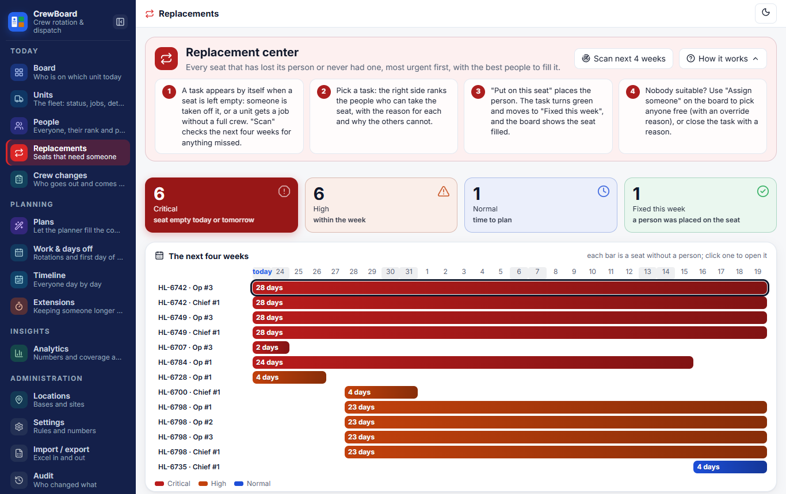
Where tasks come from
You do not create these tasks. One appears by itself when a seat is left empty: you take someone off it, a unit gets a job without a full crew, or a crew change has nobody coming. Scan next 4 weeks checks the coming weeks for anything missed.
Urgency
| Level | Meaning |
|---|---|
| Critical | The seat is empty today or tomorrow |
| High | Within the week |
| Normal | Time to plan |
| Fixed this week | Solved: someone was put on the seat. These stay listed, in green, for a week. |
Working a task
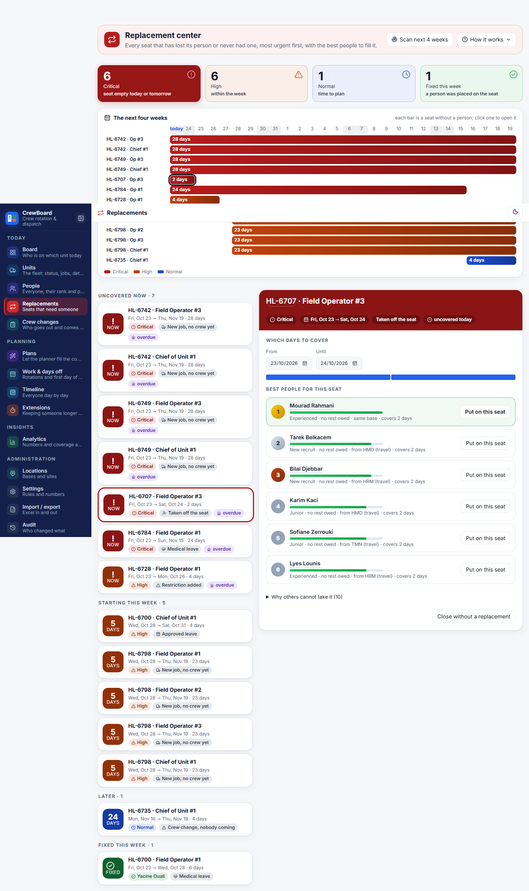
- Pick a task in the list (grouped by how soon it starts).
- On the right, adjust From / Until if only part of the gap must be covered.
- Read Best people for this seat: each person has a fit bar and the reasons ("no rest owed", "from HRM (travel)", "covers 21 days").
- Press Put on this seat next to the person you choose. CrewBoard checks every crew rule first.
- Open Why others cannot take it to see who was ruled out and which rule stopped them.
- Nobody suitable? Use Assign someone on the board to pick anyone free (with an override reason), or press Close without a replacement and give a reason.
The problem is fixed
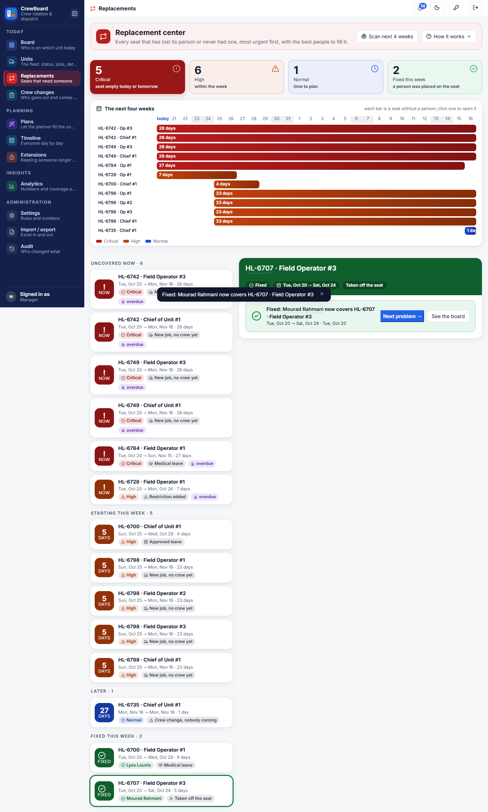
You get a message ("Fixed: ... now covers ..."), the task moves to Fixed this week, the "Fixed" tile goes up and the board shows the seat filled. Next problem jumps to the next open task; See the board opens the board. If you covered only some of the days, the rest stays open as a new part of the task.
Filling a seat by any route (board, transfer, plan, replacement) closes the task it was for.
Crew changes
Every handover in the coming days: who leaves a seat, who arrives, and whether someone is actually coming.
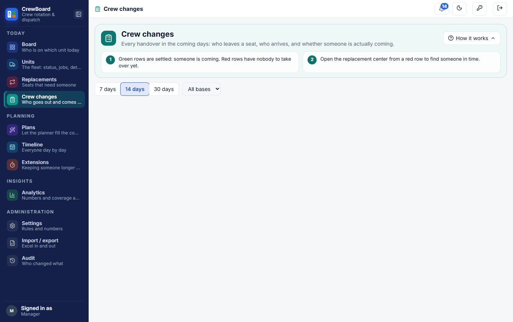
From a red row, open the replacement center to find someone in time. Click a name to see the person's schedule.
Plans
Let the planner propose who works where for the coming weeks, check it, then publish it to everyone.
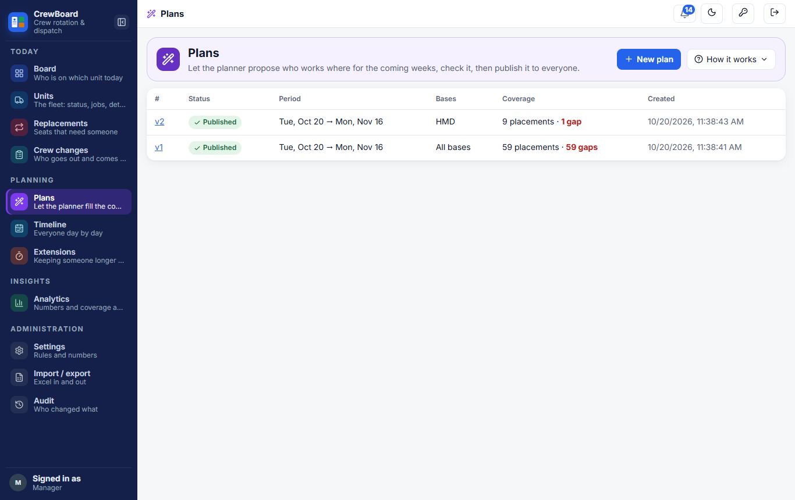
- Press New plan, choose the weeks and the bases (or all bases). The planner fills every seat it can while following every rule: hardest seats first, then scored on rest, fairness, qualifications and distance.
- Open the draft (v1, v2...). Each assignment says why that person was chosen. Seats it could not fill are listed as gaps with ways to fix them.
- Change anything by hand.
- Submit for review, then Approve and Publish. The plan becomes live on the board.
A draft changes nothing until published. Publishing re-checks every assignment against today's facts (someone may have been taken off a seat since); any assignment it has to skip opens a replacement task.
Plans go draft, review, approved, published. The setting workflow.requireApproval in Settings turns the review steps off: a plan then goes straight from draft to published, and extensions apply in one go instead of being requested then approved.
Timeline
Everyone's next weeks at a glance: one line per person, one colour per kind of day.
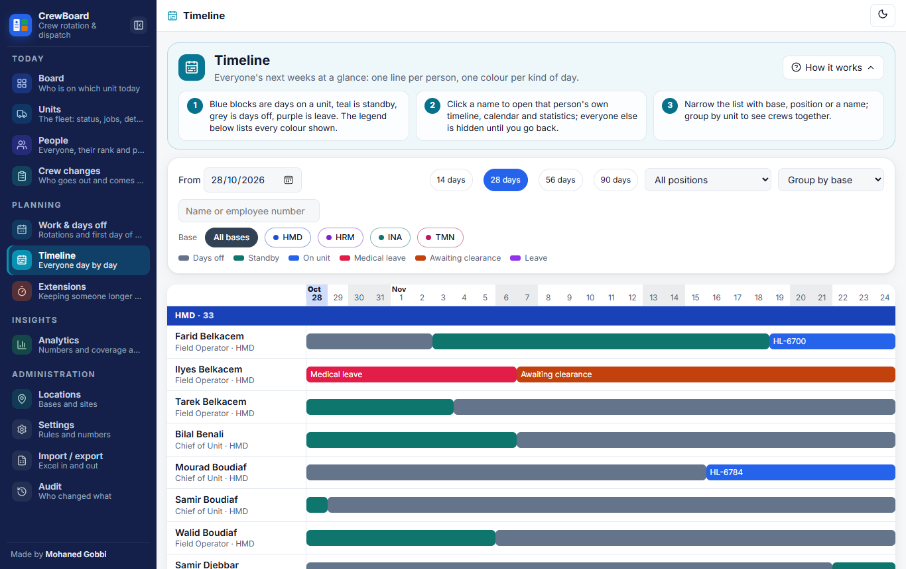
- Narrow the list by base, position or name; group by unit to see crews together.
- Move the window with the "4 weeks earlier / 4 weeks later" buttons or jump to "Around today".
One person's timeline
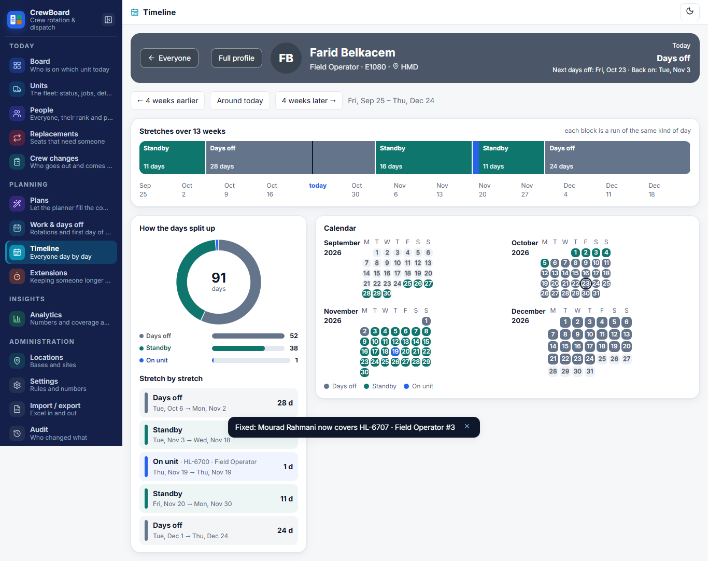
Use Everyone to go back, or Full profile to open the profile panel.
Extensions
Keeping someone on a unit past the planned end. Every extra day is owed back to them as rest.
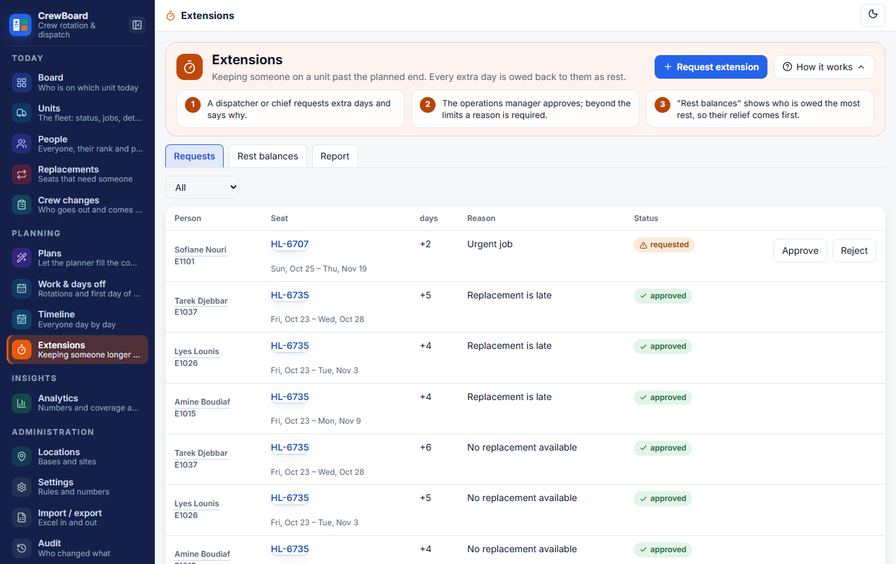
- Press Extend, pick the person, the number of extra days and the reason. It applies at once.
- Beyond the limits (days per rotation, days per quarter, longest stretch) a reason is required and the override is audited.
- Extra days are added to the person's balance of rest owed, unless the setting
shiftNextRotationOnExtensionis on, in which case the next rotation starts later instead.
Analytics
How the company stands today and where it will be short of people in the coming weeks. One page, no tabs.
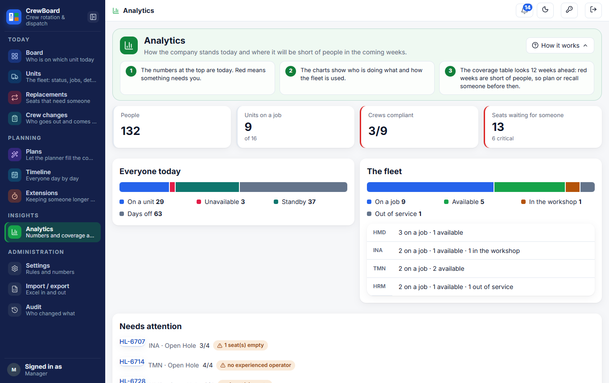
- Key numbers at the top: people, units on a job, crews that follow the rules, seats waiting for someone (critical ones shown). A red edge means something needs you.
- Everyone today and The fleet: simple bars showing what people and units are doing, and the units of each base.
- Needs attention: the crews that are incomplete or break a rule. Click a unit code to open it.
- Coverage, next 12 weeks: one row per base, one cell per week, showing how many people are available compared with what is needed on the worst day of that week. Green is covered (100% or more), amber 70 to 99%, red under 70%. The warning above the table names the biggest shortages and when they start.
Red weeks far ahead are your cue to publish a plan or recall someone early, before they turn into replacement tasks.
Settings
The rules and numbers behind every calculation. Nothing is hard-coded.
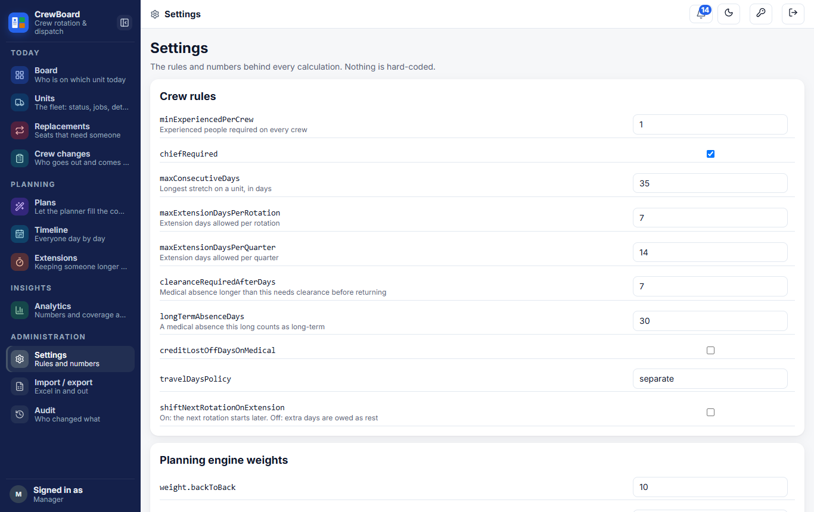
| Setting | What it does |
|---|---|
minExperiencedPerCrew | Experienced people required in every crew |
chiefRequired | Whether every crew needs a Chief of Unit |
maxConsecutiveDays | Longest stretch on a unit, in days |
maxExtensionDaysPerRotation / PerQuarter | Extension limits before an override reason is needed |
clearanceRequiredAfterDays | Medical absence longer than this needs clearance before returning |
longTermAbsenceDays | A medical absence this long counts as long-term |
shiftNextRotationOnExtension | On: the next rotation starts later. Off: extra days are owed as rest. |
weight.* | How much each factor counts when the planner scores a candidate |
workflow.requireApproval | Turn on the draft, review, approved, published pipeline for plans and extensions |
Changes apply immediately to all future calculations and are audited. Change one number at a time and look at the board afterwards.
Backups at the top of Settings: a copy of all data and files is made every day (the 14 newest are kept, then one per month), and Back up now makes one straight away. Copy the folder it names to a USB drive from time to time. About at the bottom shows the version.
Import / export
Excel in and out. An upload is checked first; nothing is written until you confirm.
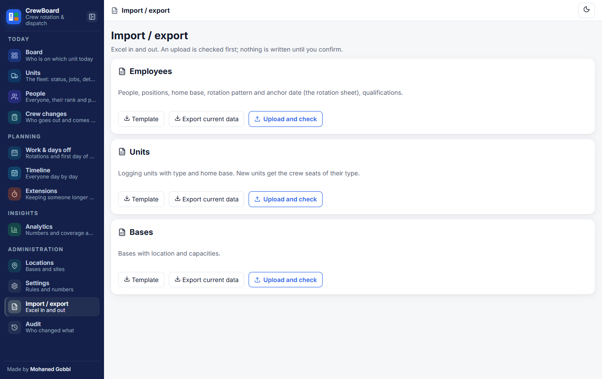
- Press Template to download an empty Excel sheet with the right columns, or Export current data to download what is in CrewBoard now.
- Fill or edit it, then press Upload and check.
- CrewBoard reports what it would create, change or refuse, row by row. Fix the sheet or press confirm.
Blank cells keep the stored value. A unit's type and home base, and archiving people, are refused on purpose because they have their own flows that release seats safely. Certificates, sites and past assignments cannot be imported yet.
Audit
Every change, who made it and why. Read only.
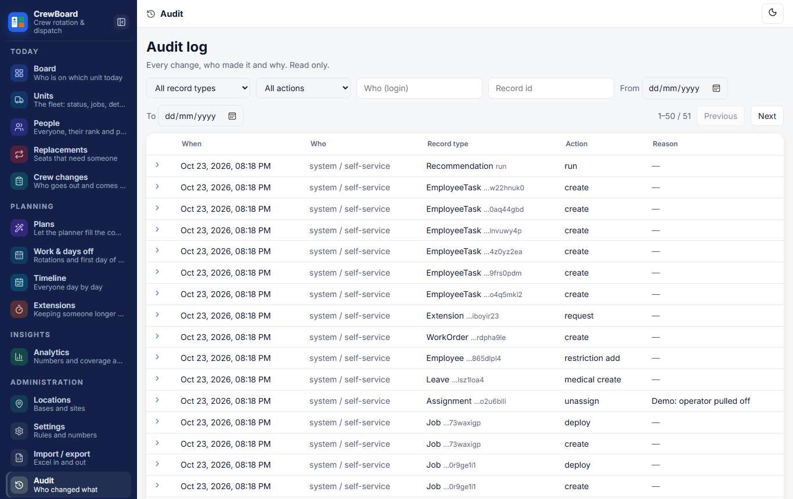
- Filter by record type, action, record id and dates.
- Open a row (the small arrow) to see exactly what changed and the reason given, for example an override reason on a rule.
How the rules work
Seats and crews
A unit has seats by type: one Chief of Unit and three Field Operators. There is no driver seat; a field operator is the driver. Required seats must be filled; optional ones need not be. A seat is held by one person for a span of dates.
Seniority
Each person is New Recruit, Junior or Experienced according to the field days they have accumulated, including history from before CrewBoard. Crews need a minimum number of Experienced people (setting minExperiencedPerCrew) and the star seat on a unit is reserved for one.
Rotation and status
Every person has a rotation pattern and an anchor date (the rotation sheet). From these CrewBoard works out, for each day, one status: on a unit, standby or days off. Status is never typed in; it is always computed.
Hard and soft rules
- Hard rules (qualification, double booking, longest stretch, a crew without a Chief or an experienced member...) stop an assignment unless you give an override reason.
- Soft rules (rest, fairness, distance, back-to-back stretches) show as warnings and as lower scores when the planner ranks people.
- The same rule check is used by manual assignment, the planner, plan publishing, replacements and swaps, so screens never disagree about what is allowed.
Rest owed and extensions
An extension adds days to a stretch. Each extra day is owed back to the person as rest, and it counts when the planner ranks candidates ("rest owed").
Plans are drafts until published
Draft assignments never count as live. Only publishing changes the board.
Certificates
A certificate is held or not. Certificates do not expire in CrewBoard (a decision made for this deployment), so there are no expiry warnings for them. Unit papers (registration, insurance, inspection) do have expiry dates.
Colours and labels
| Colour | Meaning |
|---|---|
| Red, solid | Act now: short crews, critical or overdue gaps, base below minimum, overdue service, expired papers. |
| Green | Open Hole units; OK / covered. |
| Amber | Cased Hole units; caution. |
| Blue | On a unit / on a job; links and primary buttons. |
| Teal | Standby |
| Slate grey | Days off; units at base without a job; out of service |
| Orange | The workshop |
Colour is never the only signal: every state also has a text label or icon.
Running and setting up
Installing
Run CrewBoard Setup 1.0.0.exe (built with npm run dist in the desktop folder of the project). It installs for the current Windows user and needs nothing else: no database server, no browser, no Node.
Where the data is
Everything is in %APPDATA%CrewBoarddata: the database (crewboard.db), the uploaded files and the daily backups. Uninstalling CrewBoard keeps this folder. To move to another computer, install CrewBoard there and copy this folder over before opening it.
Without installing
start-crewboard.cmd at the root of the project builds the app if needed, runs it on http://127.0.0.1:3000 and opens the browser, on the same data. stop-crewboard.cmd stops it.
Questions and fixes
| Problem | What to do |
|---|---|
| Someone is sick or away and cannot work. | Click them on the board (or in the unit or their profile), then Unassign, or Replace to put someone else in straight away. Add the reason if you like; it goes in the audit log. |
| I cannot assign someone to a seat. | Read the reason shown: a hard rule stops it (qualification, already booked, longest stretch...). Choose someone else, or give an override reason if you accept the risk. |
| A person is missing from "Best matches". | Open Why others were ruled out. They may be on days off, already on another seat, unqualified, or would break a rule. |
| A unit shows "In the workshop" and I did not do that. | A preventive service came due and opened a workshop visit. Press Repaired on the unit when it is back. |
| A unit cannot be deleted. | It has history (crew, jobs or workshop visits). Use Out of service. |
| The board looks out of date. | It refreshes after every change you make; press Ctrl+R to reload it. |
| I want to know who changed something. | Open Audit and filter by record type or person. |
Glossary
| Term | Meaning |
|---|---|
| Unit | A truck / rig that works on jobs with a crew |
| Open Hole (OH) / Cased Hole (CH) | The two kinds of unit and work |
| Seat | One position in a crew, held by one person for a span of days |
| Base | A home location (for example HRM, HMD, INA, TMN) with units and staff |
| Job | A piece of work at a site with dates; units are deployed on it |
| Crew change | The day one person leaves a seat and another arrives |
| Standby | Available at base, not assigned to a unit |
| Override | Allowing an action that breaks a hard rule, with a reason that is recorded |
| Fixed | A replacement task that was solved by putting someone on the seat |
| Rest owed | Days a person is owed after extensions |
CrewBoard is made by Mohaned Gobbi. © 2026 Mohaned Gobbi.
The screenshots were taken from the running platform on the demo data. They can be regenerated with npx playwright test -c playwright.manual.config.ts in apps/web (see docs/manual/README.md).